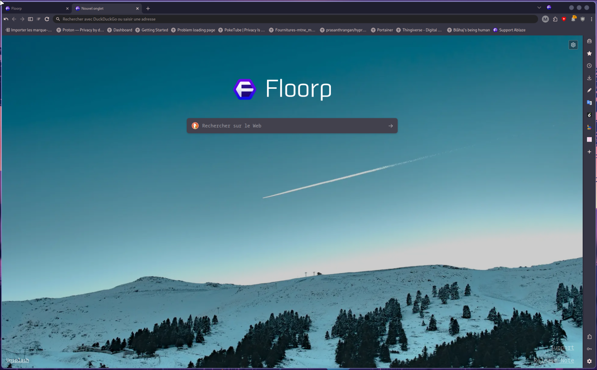

Welcome to my first ever blog! I know no one will read it but it's okay i dont really care, no one listens to me anyway... /j
Today i will talk about my new main browser called "Floorp"! Floorp is a fork of Mozilla Firefox which is pretty cool for people who enjoy browsers that dont take up 129 gigs of ram :)
It's also pretty cool because it's not a chromium fork, and chromium is a spyware made by google, so it's pretty cool to have a browser that's not a spyware.
It's basically vivaldi but for Firefox. It include very nice features (which are not plugin based but baked into the browser directly) such as a robust tracking blocker, fingerprinting protection, regular updates (every 4 weeks since based on ESR). It also include a lot of customizability options that go beyond Firefox CSS.
Click me to give floorp a try!
- Mopi